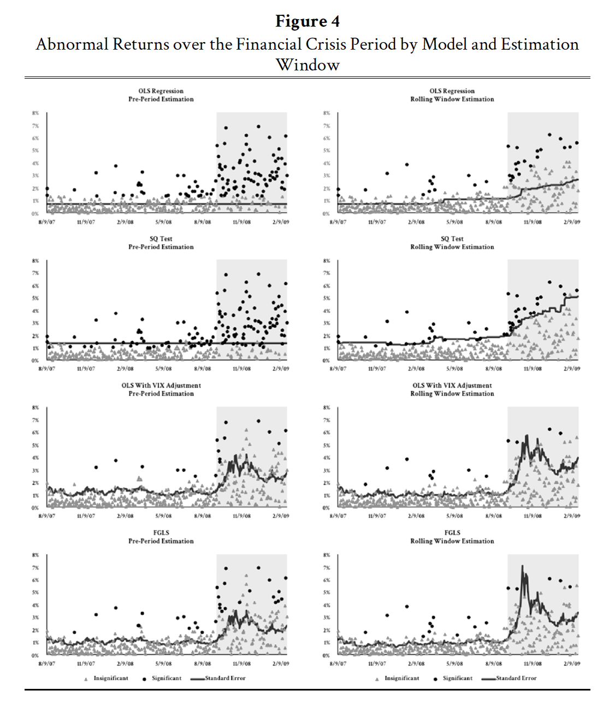

Single-Firm Event Studies, Securities Fraud, and Financial Crisis: Problems of Inference
Links
Abstract
Lawsuits brought pursuant to section 10(b) of the Securities and Exchange Act depend on the reliability of a statistical tool called an event study to adjudicate issues of reliance, materiality, loss causation, and damages. Although judicial acceptance of the event study technique is pervasive, there has been little empirical analysis of the ability of event studies to produce reliable results when applied to a single company’s security.
Using data from the recent financial crisis, this Note demonstrates that the standard-model event study used in most court proceedings can lead to biased inferences sanctioned through the Daubert standard of admissibility for expert testimony. In particular, in the presence of broad market volatility, a base event study will cause too many returns to be identified as statistically significant. Even recently proposed variations of the event study model specifically designed to address violations of the statistical assumptions of an event study will not completely correct this bias.
This Note proposes two alternative forms of event studies that are capable of creating statistically reliable results and should be adopted by courts in instances where there is cause to believe that market volatility has increased. Over previous decades, the judiciary has steadily moved toward a reliance on empirics and expert testimony in overseeing complex civil cases. Yet there has been surprisingly little research accompanying this judicial deference on the ability of statistical evidence to produce the promised result. This Note calls into question whether this movement has been beneficial from a logical or empirical perspective, but it demonstrates that alternative techniques that can aid the finder of fact in resolving these disputes—regardless of market trends—may in fact exist.
Important figure

@article{baker2016single,
title={Single-firm event studies, securities fraud, and financial crisis: problems of inference},
author={Baker, Andrew C},
journal={Stan. L. Rev.},
volume={68},
pages={1207},
year={2016},
publisher={HeinOnline}
}